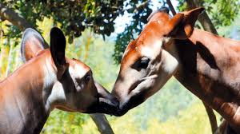

okapis
 El okapi de 1,5 metros de altura, también conocido como jirafa del bosque, es originario únicamente de la República Democrática del Congo. Tras más de medio siglo sin avistamientos en el parque, la especie fue redescubierta en el valle de Semliki, en Virunga, en 2006.
Amenazas
La tala y quema de bosques La minería de oro ilegal La caza furtiva de carne de animales silvestres El conflicto armado en la región La expansión de los asentamientos humanos